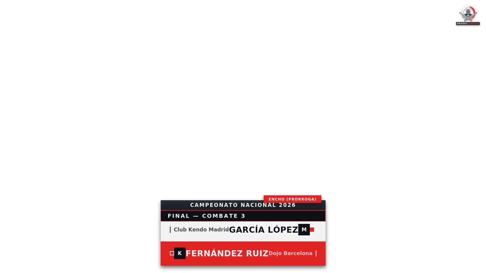
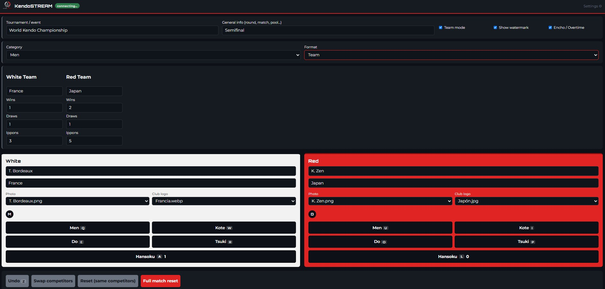
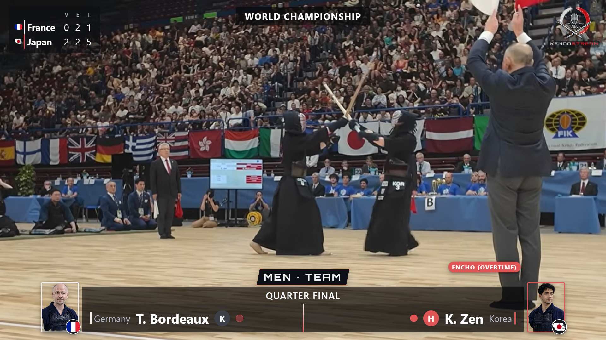
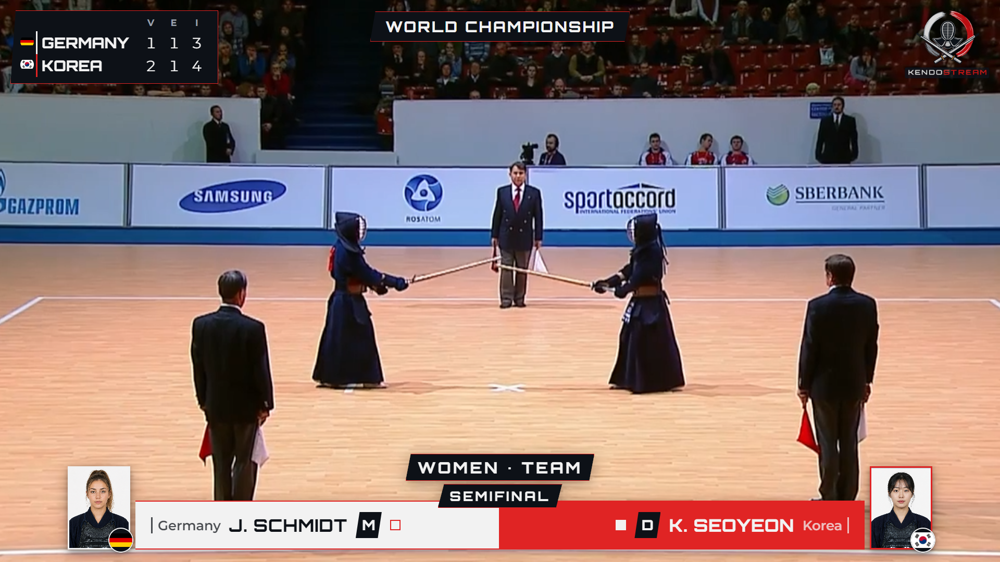
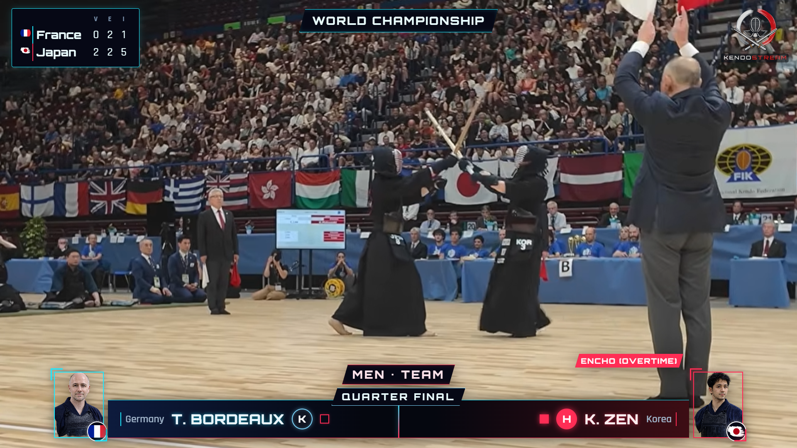
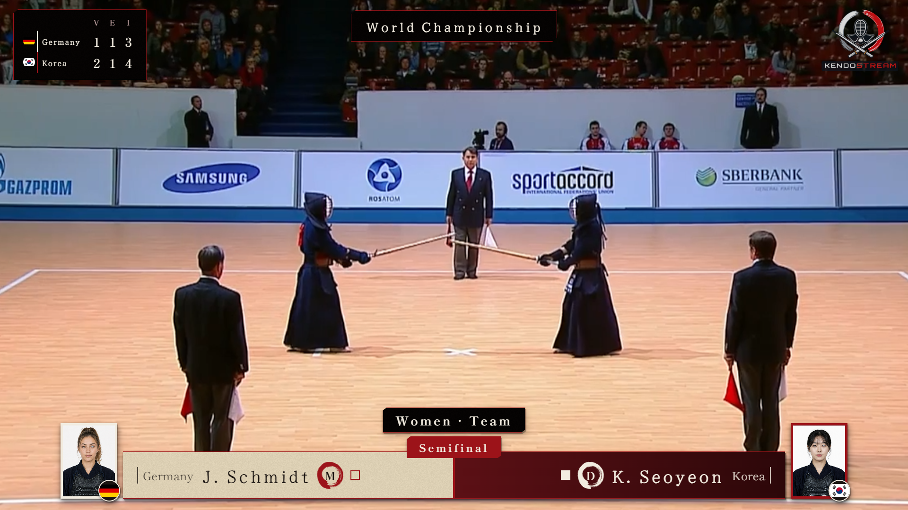

Software libre para clubes de kendo
Panel de control y overlay en tiempo real para OBS Studio. Puntos, hansoku, equipos y categorías — pensado por y para la comunidad del kendo, sencillo y gratuito.

Qué es
KendoSTREAM nace para resolver un problema muy concreto: mostrar de forma clara y profesional el estado de un combate de kendo durante una retransmisión, sin que el club tenga que comprar software especializado ni contratar a nadie para operarlo.
Un operador controla el combate desde un panel sencillo — puntos, hansoku, nombres, clubes — y ese estado se refleja al instante en un overlay que se añade a OBS Studio como una fuente más. Todo funciona en red local, sin depender de internet durante la retransmisión.
Es gratuito, de código abierto para uso no comercial, y pensado desde el primer día para que cualquier club pueda instalarlo sin conocimientos técnicos avanzados.

Características
Sin funciones de más que compliquen la instalación — solo lo que hace falta para retransmitir bien.
Men · Kote · Do · Tsuki
Puntos por técnica, hansoku con ippon automático al segundo hansoku, y combate que se cierra solo al llegar a 2 puntos.
Shiro · Aka
Victorias, empates e ippones por equipo, mostrados en una tabla clara dentro del propio overlay.
Browser Source
El overlay se añade como una fuente de navegador más, con fondo transparente. Sin plugins ni pasos raros.
Categoría · Modalidad
Fotos de competidores, logo del club y categoría/modalidad, para las competiciones que lo necesitan.
ES · EN
Interfaz del operador en español o inglés. El overlay lo escribe el propio operador, en el idioma que quiera.
100% local
Todo corre en la red del pabellón. Nada de tu combate pasa por servidores de terceros.
Móbil · Tablet
Utiliza tu móbil o tablet para manejar el marcador a distancia
Editor
Edita vídeos ya grabados para añadir el marcador de la misma forma que lo harías en directo.
Escuchando
¿Has notado un error?¿Echas en falta alguna función? Ponte en contacto y lo solucionamos. kendostream@outlook.com
Personalización
Cámbialo desde la página de configuración, sin tocar ni una línea de código. Más diseños en el futuro

Predeterminado
Discreto y neutro.

Identidad de marca
Cortes angulados, tipografía propia y estilo más profesional.

Moderno
Estética futurista con marcos y bordes luminiscentes

Estilo Japonés
Corte de caligrafía japonesa tradicional.
En acción
Un combate real retransmitido con KendoSTREAM.
Empezar
Necesitas Node.js y OBS Studio, los dos gratuitos. La guía completa cubre Windows y Mac, con solución de problemas incluida.
Consigue la última versión desde la página de Releases de GitHub (Próximamente).
Un único comando, la primera vez que lo uses.
Como fuente de Navegador, con fondo transparente.
cd kendostream npm install añadiendo dependencias… npm start KendoSTREAM escuchando en http://localhost:3000
¿Te bloquea el antivirus o el Control de aplicaciones inteligentes de Windows? La guía de instalación explica exactamente qué hacer.
Documentación
Paso a paso para Windows y Mac, configuración de OBS, y solución de problemas habituales.
Próximamente →Instalación, primer combate, y configuración del modo Campeonato Importante, explicados paso a paso.
Próximamente →Código fuente, historial de versiones, y el lugar para reportar cualquier problema que encuentres.
Próximamente →Novedades
KendoSTREAM es gratuito para cualquier uso no comercial: clubes, federaciones, competiciones, uso personal o educativo. No está permitido venderlo, modificarflo ni redistribuirlo con fines comerciales sin consentimiento del creador. Si desea realizar cualquier colaboración, sugerencia o petición por favor contacte al siguiente email: kendoSTREAM@outlook.com